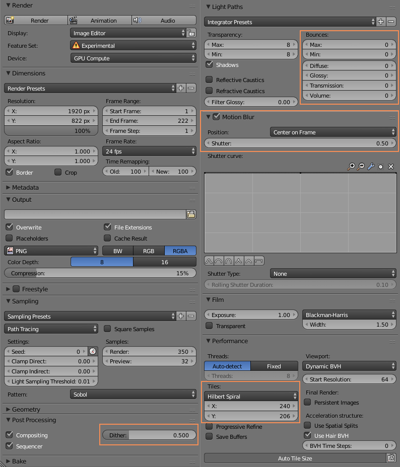

Come colonna sonora che accompagna le immagini è stata scelta Tenebre MCMLXXXIV composta da Rydar.
Per quanto riguarda il rendering sono state utilizzate le seguenti impostazioni:
Da notare come i Bounces dei Light Paths siano stati tutti disattivati.
Questo ha permesso di limitare la potenza di un motore unbiased come cycles e raggiungere una migliore stilizzazione, allo stesso tempo riducendo drasticamente i tempi di render.
Per quanto riguarda il numero di sample si è tenuto il numero base di 350 samples in tiles di 240x206 per meglio ottimizzare i tempi di render su GPU e adattando i tiles al rapporto 1:2,35 dei frame.
Per alcune scene tuttavia si è deciso di alzare il numero di sample a 450 e 700 per alcune scene di interni, per ridurre il più possibile il noise.
Non è stato utilizzato alcun tipo di effetto di denoising.
È stato applicato anche il motion blur con i settaggi di default, in modo da migliorare l’estetica complessiva delle animazioni.
Si è deciso inoltre di applicare del dithering ai frame esportati. è stato necessario in quanto i gradienti cromatici generati dal bagliore dell’effetto glare sarebbero altrimenti comparsi scalettati in alcune parti del fotogramma.
Su Nvidia GTX 970 il tempo di rendering medio è variato dai 55 secondi ai 2 minuti circa per le scene più complesse o con più sample.
I titoli del corto è stato aggiunto in fase di montaggio, così come gli spazi neri nella sequenza iniziale.
Non sono stati aggiunti ulteriori effetti di post-processing successivi a quelli applicati su blender.
La velocità di riproduzione del filmato finale esportato è di 24 frame per secondo.